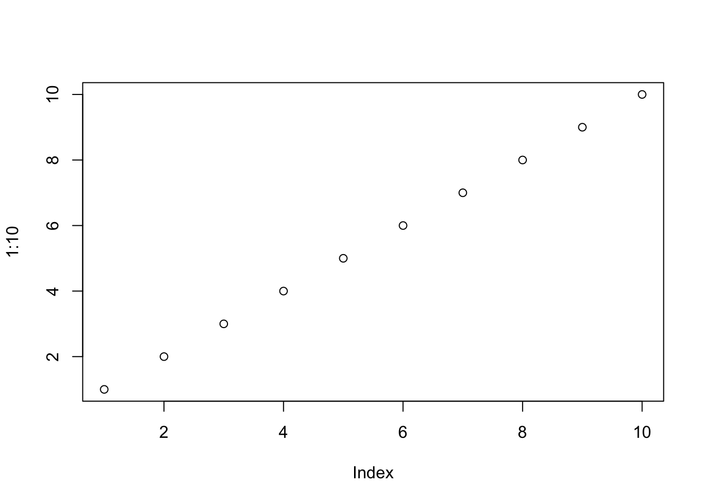

E Sandbox
E.1 R Markdown
This is an R Markdown document. Markdown is a simple formatting syntax for authoring HTML, PDF, and MS Word documents. For more details on using R Markdown see http://rmarkdown.rstudio.com.
When you click the Knit button a document will be generated that includes both content as well as the output of any embedded R code chunks within the document. You can embed an R code chunk like this:
## speed dist
## Min. : 4.0 Min. : 2.00
## 1st Qu.:12.0 1st Qu.: 26.00
## Median :15.0 Median : 36.00
## Mean :15.4 Mean : 42.98
## 3rd Qu.:19.0 3rd Qu.: 56.00
## Max. :25.0 Max. :120.00E.2 Including Plots
You can also embed plots, for example:

Note that the echo = FALSE parameter was added to the code chunk to prevent printing of the R code that generated the plot.
Once can use weighted kappa to quantify the level of agreement between two raters who observe the same item[3].
The default figure size is 3x3. Because the figure width is small, usually you will be able to put two images side-by-side if you set the chunk option fig.show=‘hold’, e.g.,
 If you want larger figure sizes you can change the fig_width and fig_height in the document output options or alternatively override the default options on a per-chunk basis.
Opening a dataset:
library(readr) ksb_data01 <- read_csv("http://bit.ly/2uLGLUj", na = "NA") View(ksb_data01)
Adding figures and cross-reference
see Figure E.1
Figure E.1: Samples and Populations
E.3 labels and equations
\[\begin{equation} f\left(k\right) = \binom{n}{k} p^k\left(1-p\right)^{n-k} \tag{E.1} \end{equation}\]
References
[3] J. Cohen, “Weighted kappa: Nominal scale agreement provision for scaled disagreement or partial credit.” Psychological Bulletin, vol. 70, no. 4, pp. 213–220, Oct. 1968, doi: http://dx.doi.org/10.1037/h0026256.